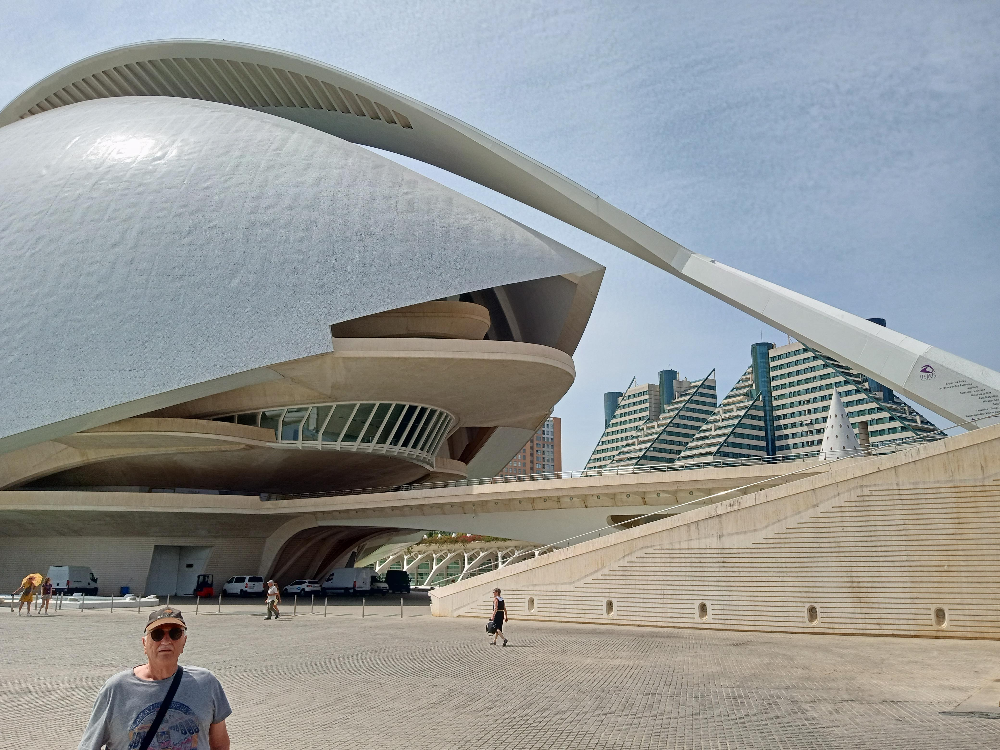
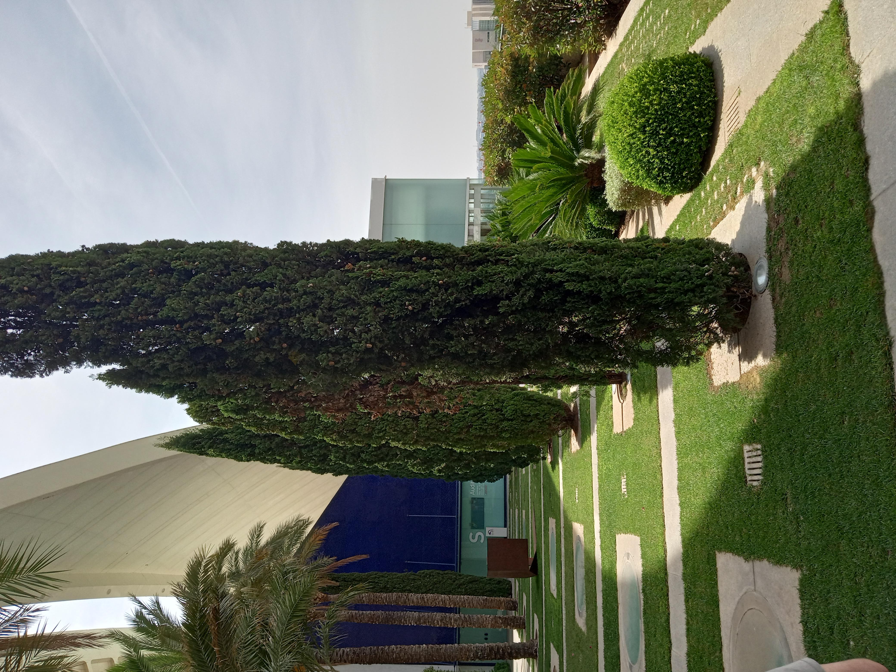
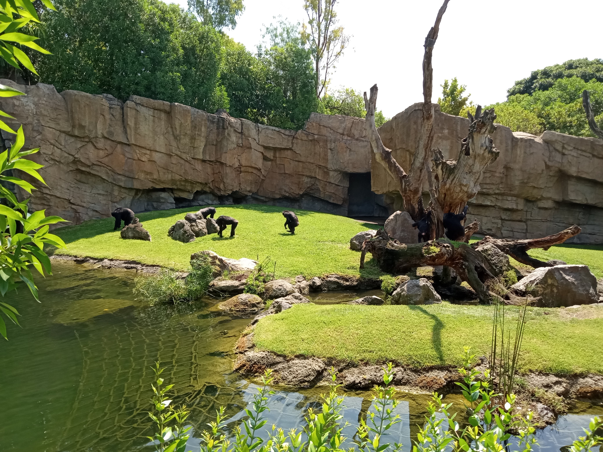
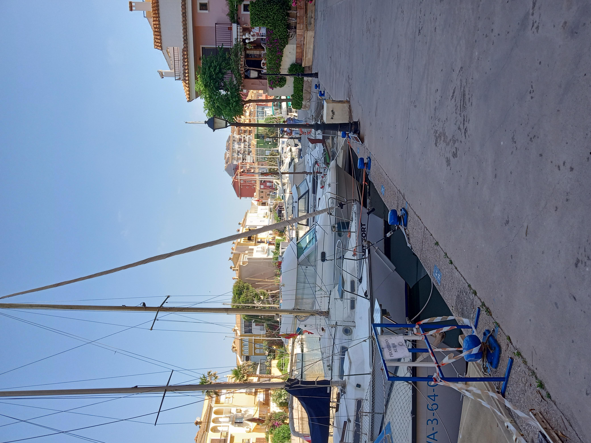
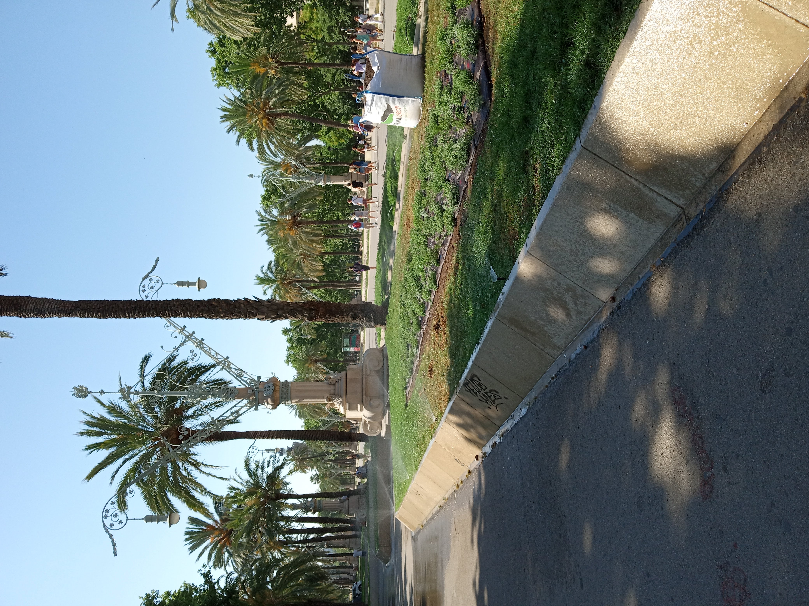

Week 11+: 30/5/2022 - 8/6/2022¶
This section starts with the last two days of the program and extends through our post program trip to Valencia. I’m starting to drag as I try to finish this up. Hope I can get it wrapped before I totally forget what happened (now it’s 12/6/2022!)
Araos: Boundary Marker

30/5/2022 Monday¶
Today in Renewable Energy students made presentations about topics of interest to them. Generally thoughtful and insightful. Well done. Then we walked up to Expanish to prep for our ‘final exam’. Same format as before. Dawn felt better about the oral and listening parts of the exam and headed off to catch another kettlebell class. I was the last conversational exam student for our class so I got a chance to just chat with Elena. Sort of hijacked the test format to talk about the previous weekend in the Pyrennes. I will be sad to not have this class any more. It was very helpful for me.
After all of that I picked up Dawn and we headed home for a snack. Brian and Brenda had a busy day exploring and enjoyed a siesta. We met them around 8:00 to find a place for dinner. I was thinking about an empanada place near Origo bakery but it seemed more like a take out place when we got there. Should have done a walkby ahead of time. We had noticed the Ferrum Restaurant just a few doors earlier. We went back and got a table with a cheerful and helpful waitperson. Food turned out to be lovely and only a little more expensive that we typically found for dinner. I have added it to the food list as a place we would definitely recommend if you’re in that part of town (near the intersection of Diagonal with Passeig de Gracia). Brian and Brenda would have gone back the next night but couldn’t remember the name or where it was.
31/5/2022 Tuesday¶
Music presentations today were mostly thoughtful and engaging. Nice to see the creativity of perspective on the part of most of the students. Hit the marks that I needed.
After a short break Jordi led the re-entry workshop which was unfortunately poorly attended. Part of this was because a group of students needed to get their pre-trip COVID tests done today for their flights home tomorrow. 45€ at Hospital Delfos. Jordi did a good job of leading an active discussion of expectations for our return to the US. As I write this after returning to home I have to say it has been more jarring to come home than it was to go to Barcelona which I find surprising somehow. I’ll have to unpack that sometime if I can.
After the discussion we all walked down to the Barceloneta to meet for the farewell dinner on the boardwalk. Even that is an interesting example of the cultural differences since it was a solid 35-40 min walk that we just did because that’s what you do. Like just deciding to walk from Pilot Butte to the Tower Theater as a matter of course. Not something you see often in Bend. Dinner was a tasty affair but Dawn was understandably frustrated to feel even more ignored than usual by the rest of the students. Most of the students have ‘tribed up’ with the older adults on the outside. I wonder if this is common in these settings though I’m pretty sure I could have been better about noticing and responding to the dynamic. Dawn and I walked home afterwards ready to move on from most of the group.
1/6/2022 Wednesday¶
Today we met Brian and Brenda at Sants to catch the train to Valencia. A bit of a longer ride since it wasn’t a direct high speed train. Still, we got to see a lovely swath of countryside on the way. Passed through Tarragona as all of our train rides have done and then down the coast. In many places the mountains are impressively close to the shore making for dramatic vistas. Valencia is on a delta so the mountains are further away. Estacio de Nord is not really on the north side of Valencia for some reason but it is a very lovely classic train station.
Valencia: Estacio de Nord

We caught a taxi from the station to Port Saplaya where Brenda had found a AirBnb on the coast. Port Saplaya is a large marina style development a little ways out of Valencia proper. It took a bit to find the right entrance to the right building but it got sorted. The apartment was on the top floor and overlooked the beach. A strong onshore breeze was blowing which allowed us to flush the stale air out of the apartment very quickly. Very lovely.
Port Saplaya: View from terrace

After settling in we walked down to see about getting some supplies and found a Walmart style big box store near the bus stop and did a little shopping. Lots of different systems in this store including only one way in and shopping carts locked up with some mechanism that we didn’t have the key for. Carried our food and wine back to the apartment.
Later we had dinner at a Argentine seeming place also back near the bus stop end of the the development. The breeze kept blowing the loose items off the table and it was almost a little cool for the first time in a while. Slept well and even though the breeze died in the middle of the nightbut it wasn’t too stuffy.
2/6/2022 Thursday¶
After a leisurely breakfast Brian and Brenda went for a walk and we headed down to the bus stop to find our way to the river park in Valencia. The students who visited suggested that both the park and the City of Arts and Sciences were worth visiting. We considered getting a 3 day unlimited metro pass for our visit but given that individual rides were only 1.5€ it seemed like a wash given that we didn’t know how much use we would get. Amazingly the bus (only one comes out to Port Saplaya) arrived almost the moment we got there. We rode it in to the point where it was closest to the middle part of the park and walked from there.
From there it was a bit of a walk to get to the central park called Jardin’s del Turia. You can find some of the history here but basically the river Turia used to run through the middle of town and in 1957 there was a huge flood that drowned the towna and killed a significant number of people. The Valencian response was to move the whole river to a new man made channel south of town (that’s bold) and repurpose the old river bed. The people resisted just turning it into more commercial property and it became a 7 km long project that holds a variety of individual projects implemented over time. Many bridges and gardens in different styles. The entire park is heavily treed and sits below the level of the city (being a river bed and all). Here are a couple of views of the park one from above looking along the lower part of the park and the other down in the park.
Jardin del Turia: Overview
Jardin del Turia: In the Park
As the students noted it is very lovely. As we walked down the park towards the City of Arts and Sciences we saw this climbing project on underside of a bridge much like the one in Redmond though not nearly so high off the ground. This might actually qualify as a bouldering problem.
Jardin del Turia: Climbing route
A little further down we passed the Gulliver play park. A giant Gulliver sculpture for kids to clomb over and slide down. It is currently being rebuilt so we couldn’t get onto it to explore but this image will give you a sense.
Jardin del Turia: Gulliver
Shortly after we arrived at the City of Arts and Sciences which is another of the many individual projects that form the collective Jardin del Turia. This set of spaces was built to be a tourist attraction and appears to have worked. There are also concert spaces, a science museum, and an aquarium along with open spaces to display the fascinating sculpture of one man. On this day we took a tour of the opera house which is a spectacular building. The architect was clearly a fan of cantilevers as seen in these two images showing the ‘front’ and ‘back’ of the opera house with the enormous cantilevered feather form hanging over it. Really is remarkable to see.
Jardin del Turia: Opera House (front) 
Jardin del Turia: Opera House (back)
Inside the opera house the performance spaces are really lovely. The small space is very intimate and holds about 800 people. It is very steeply pitched which must make it feel very intimate during performances.
Jardin del Turia: Opera Small Hall
Jardin del Turia: Opera Small Hall (pitch)
This is a concert hall more musical groups and has a lovely feel with nicely adjustable clouds. The primary reason for the image is to show Michael so someone will build him a system just like it for COSA:P Note that the last set of clouds is down at stage level for adjustment.
Jardin del Turia: Concert Hall
From there we went up to the rooftop garden that is at one entrance to the main opera hall. 5 stories in the air and very pretty with a lovely view. Seems a little overwrought to have a palm tree garden to enhance the entrance but I suspect the patrons appreciate it.
Jardin del Turia: Rooftop Garden at the Opera House 
The interior space of the main opera hall is fantastic and particularly unusual for having hard tiled surfaces (trencadís) which would normally give way too many echoes. A characteristic of the trencadis that Gaudi created is that it usually on curved surfaces. The the walls undulate to the reflections off the hard surfaces don’t go the same place. In addition there is space behind all the balconeys for the sound to mix and reflect before returning to the audience. There are also large ports in the back wall that take direct sound from the back of the lower balconies and returns it high up in the back of the theater. All in all very impressive and apparently it works quite well.
Jardin del Turia: Main Opera Venue
You can sort of see the ports in this image looking up behind the balconies. It’s an odd perspective but they are there.
Jardin del Turia: Main Opera Sound Ports
Finally, since it is opera, there is a magnificant pit which is what you get when you design it as part of the space. Most US pits I have seen are pretty ad hoc but this one is very nice. The image shows the really remarkable amount of space for the players in the pit as well as the very classy ‘blast shields’ to protect the back rows of the string sections from the penetrating sounds from the brass players.
Jardin del Turia: Main Opera Pit
After the tour we were pretty washed out from the heat and decided to go find some place to eat before deciding what next to do. As we crossed the street looking for cafes we passed by the Museo Faller de Valencia which we had been told about. More on that later. The place I thought I was looking for was closed for renovations so we ended up at the Paceros Bar which is a Columbian restaurant. Food was nice and very simple. Most amusingly for me meals came with platanos for dessert (roasted plaintain bananas. Brought back memories of Venezuela for sure. We were amused to see a little motorcycle ‘gang’ drop in for lunch while we were there. No idea whether they were pretenders or the real thing.
After lunch we went back to the Museo Fallero which had been recommended to us by Laura at SAE. The Fallas festival is a big deal in Valencia and is recognized as a UNESCO Intangible Cultural Heritage. You read about it in the link above. Orginally all the brilliant creative work building the paper mache figures and tableaus was put to the torch on the last night of the festival (March 19th). At some point it was deemed reasonable to pardon one work from the flames. I thought we heard that it was the people’s favorite but perhaps it is a committee. In either case the pardoned ninot (the figures) is added the the collection at the Museo Fallero for posterity. It is a pretty low key museum and only 2 € (only 1 € for us seniors) and the posters advertising the festival as well as portraits of the ‘queen’ of the festival add richness and depth to the collection. It was fascinating and we would recommend it.
At this point it was midafternoon on a pretty warm day so we walked back to where we could catch the bus to Port Saplaya. We were glad to get back to the cool breeze at the coast and have a little siesta before catching dinner with Brian and Brenda. I can no longer remember where we went to dinner that particular night.
3/6/2022 Friday¶
Morning to Bioparc and evening a tour of Parque Albufera (weather scuttled the sunset)
Brian and Brenda headed off to sit on the beach while we decided to head in and see what was up with the BioParc. This is an attempt to create a new sort of zoo experience that is focused on the well being of the animals and carefully manages the intrusions from the visitors. The Bioparc is at the opposite end of the Jardin del Turia from the Ciudad de Artes y Ciencias. The entrance is dominated by this lovely sculpture of an elephant using a range of materials. Full size and very impressive.
Valencia Bioparc: Entrance
We wandered through various parts of the parc as we headed towards the elephants. In many cases we couldn’t see the animals because they have figured out where to hang out that reduces the intrusions of the humans and their noisy school classes. Compared to a traditional ‘zoo’ it seems impressively thought out though it is still a prison even if it is a nice one. Here is the chimp enclosure and an image of one of the young ones.
Valencia Bioparc: Chimpanze Enclosure 
Valencia Bioparc: Chimp Playing

Dawn got lots of images over the two hours we were there so I didn’t take a lot of pictures. I had to take the tortise picture for Jeff of course.
Valencia Bioparc: Tortise
It was quite a hot day so after we left the Bioparc we decided to just flag a taxi and head back to the beach. Good choice given the heat. Dawn had scheduled a tour out to the Albufera Lagoon that we set up for evening to catch the suggested sunset. After eating and hanging out on the beach we went back into Valencia to meet near the Torres de Serranos. We got there a little early so we walked around the area which was very lovely and Dawn stopped and bought some recycled aluminum bracelets and I got a music T-shirt. The towers are open to the public and the doors are truly massive. I didn’t have time to walk up to the upper levels but it would have been fun.
Valencia Albufera: Torres de Serranos
We connected with out tour group. People were from a range of places so the common language turned out to be English. Easy for us and a little m more challeging for some. We crossed over the rerouted Rio Turia (that led to the creation of the central park) on the way out to the lagoon. Geologically the lagoon is relatively recently cut off from the sea by a large sand bar. Apparently it was a salt water lagoon/bay until Roman times when the sand bat began to close off the lagoon. Inflowing fresh water from the mountains and springs has kept the fresh water lagoon stable over the centuries but rapid agricultural development for rice agriculture has reduced the size of the lagoon by 80% (can’t find a good reference for this but it’s a huge reduction from the original extent - sorry) Cultivation of rice led to the paella culture which Valencians are quite proud of. We visited the sand bar that creates the lagoon and the pine forest which stabalizes it. There is now an invasive vine which threatens the ecosystem along with fire due to climate change. From there we went to the edge of the lagoon where there is now a tourist based industry giving tours across the 1 m deep lagoon. It is so shallow that vistors are discouraged from swimming since the often get cut or poked by the sharp leaves of the reeds that cover much of the laggon. Visitors often hope for a beautiful sunset over the laggon but it was a stormy day for us which was dramatic but no sunset. Below is a sense of the lagoon and our ‘captain’.
Valencia Albufera: Lagoon
Valencia Albufera: Captain of the Boat
Headed home late and had dinner at one of the beach front restaurants. Not bad but don’t remember much (of course it’s been nearly a month as I finally try to wrap this all up).
4/6/2022 Saturday¶
Today we took the whole day and read in the room, walked the beach in different directions and went swimming. Water is warm without being bathtub like. The beach shelves out very slowly so you can be 30 m offshore and still only be hip deep. Swam out almost to where the jetty protects the beach. Not much chop but it’s remarkable how little chop it takes to make you pay attention to wavelets coming at you and keeping your head out of the water (silly contacts). Swam a couple of times through the day while Dawn collected beach glass and Brian and Brenda went into town.
5/6/2022 Sunday¶
Today we all went into the Ciudad de Artes y Ciencias. Dawn and I headed over to the Science Museum while Brian and Brenda headed for the Central Market. Before we went to the museum we stopped at the garden along the end of the complex which was lovely. The architext clearly loved various forms of cantilevers. Here is a trellis along one side of the garden. Dawn took photos of the lovely sculptures that were installed along this deck. Same guy who did the more monumental stuff that is in the water features down below.
Valencia Ciudad de Artes y Ciencias: Jardin
From there we walked down towards the museum of sciences pictured below from a distance.
Valencia Ciudad de Artes y Ciencias: Science Museum
As you look at the image you can see the clamshell like structure of parts of the building with arcing ribs. Some of these are hinged and hydraulically actuated to allow the large walls to be opened in a fascinating way. Here are a couple of images of one such structure on the Hemispherico (the IMAX theater) both closed and open.
Valencia Ciudad de Artes y Ciencias: Hemispherico Closed
Valencia Ciudad de Artes y Ciencias: Hemispherico Open
We stopped for 2nd breakfast (like we were hobbits!) before entering the museum. It is nicely laid out with almost all of the activities having a opportunity for active engagement from the visitors. This is what the students mentioned about their visit was playing with these demonstrations. As a teacher it was a little frustrating for me that the guidance for visitors was a little hard to follow and so most folks played pretty randomly with the exhibits and probably missed the point. I had a lot of fun with the ones that worked. Not a huge musuem but nicely handled. The exhibits about the space programs and gravity were very nicely designed even in most people missed the point. I loved the scale models of all the rockets to appreciate the differences in scale of all the different programs over the last 50 years. The music exhibit and the human perception exhibits were also very engaging. We got pretty tired after a couple of hours so not something to try to do all a once. Definitely recommended for the curious.
It was starting to get hot at that point so we headed back to the bnb to swim and relax for the rest of the day.
6/6/2022 Monday¶
In the morning we took a walk around the marina at Port Saplaya to get a sense of the whole development. It’s actually remarkably extensive due to the ins and outs like many of these developments. Helped one guy who was trying to offload some stuff from his boat without going to the trouble of setting up a walkway. Luckly Dawn is very responsive and we didn’t drop his stuff or drop him in the drink.
Valencia Port Saplaya: Marina

After that early morning walk before the heat turned on we packed up and took a quick last swim on the beach. Taxi into the Estacio de Nord only to discover that our train was delayed about an hour coming up the coast from it’s point of origin. Sat in the corner until they opened the gate and found our seats without much problem. I do enjoy the freedom the trains offer to watch the landscape and not be concerned about where to turn or any other route finding. The usual metro hops to get from the Renfre station to Clot but we got home around 9:00 and had time to do a little packing and organizing before crashing for sleep.
7/6/2022 Tuesday¶
COVID tests and Perfumery, final packing
While we were in Valencia I had booked us some COVID tests at Democratest down near the Arc de Triumf. It seemed like I had put in the right information so we headed out after breakfast and some packing to see if I had actually done what I thought. A warm day as we walked through the park at Arc de Triumf. Much more summery than when we first arrived.
Arc de Triumf Summer

As we walked down along the park we saw this classic dog waiting for it’s person out in front of a store. We saw lots of this while we were in Barcelona. Very well behaved dogs sitting outside of stores waiting attentively for their people. It was either this or the opposite end of the spectrum with the dog trying to drag their person all over the street. One extreme or the other. This is the happy extreme.
Typical Dog in Barca
Amazingly the clinic was totally expecting us and after just a few minutes and some gentle brain poking we were on our way to wait for our test results. Turning the corner near the clinic we came across a cultural site that we hadn’t crossed paths with or heard about. A 17th century (maybe 16th) town had been found under the streets of El Born and turned into a cultural center. It was structured much like a market building and as usual there were several classes of students there to visit and learn about their patrimony. We wandered about a little and then moved on towards our next errand at the Perfumery.
El Born Cultural Site
As we left the cultural site we realized that this was yet another part of Barcelona we hadn’t walked through because it wasn’t on our usual paths. It was fun. As we walked we encountered the Chocolate Museum. I think I remember Elizabeth mentioning it and since we had time to kill we went in. Ticket is printed on a bar of chocolate which is cute. I’m not sure we got a lot out of the tour but we did see students again having a chocolate making experience. That would have been fun if we had known about it.
Chocolate Museum

The Perfumery wasn’t quite open yet so we went down the street to a cafe and had coffee and enpanadas as a snack. Tasty way to kill time and while we were there our negative COVID test results were emailed to us. Because the screen on Dawn’s phone was shattered making it hard to read the digital copy we decided to go back down to the clinic and see if we could get a hard copy after picking up our goods at the Perfumery.
Thomas was working at the store and we had a great conversation with him and got to thank him for being a fun part of our Barcelona experience. Dawn got the Orange Blossam perfume she liked and I tried the Shiso that I had liked at the class. I let it sit on my skin while we talked for 20 min and it didn’t seem to change. I got 50 ml of the Shiso both because I enjoyed it and as a rememberance.
After that we went back down to the clinic where they were happy to print out hard copies for us. Amazingly easy to work with compared to American medical clinics. 23€ apiece instead of 40+ at the hospital or the airport. A tremendous relief to have negative tests and not have wonder about it tomorrow.
Finished the day packing up and trying to gauge the weight of the checked luggage. As it turns out we were right on the money. Both checked bags were within 0.5 kg of the limit! Perfect. Good thing we sent the box of stuff home (almost 9 kg there) - thanks Sandra!
8/6/2022 Wednesday¶
In the morning we finished up packing and putting the apartment back the way it was when we arrived. Here’s the look as we headed out the door.
Heading out the door
We opted for a taxi since hauling all of our luggage up and down the metro stairs was going to be a drag. Freenow got us a taxi in a few minutes and we had a good conversation with the driver on the way to the airport. Interesting social commentary about the need for all of us to contribute to finding solutions to collective problems and challenges. The general recommendation was to be at the airport 4 hrs !!! ahead of flight time which seemed ridiculous. Given the number of people we saw who didn’t have the proper COVID protocol and had to run off to get a test it makes more sense. No particular issues that way for us. We got Dawn through checking in reasonably expeditiously and sent her off to security.
Dawn on her way!
Dawn is headed to Boston to help her brother and Tegan finish up packing her mom’s house into pods to be shipped out to Oregon. In the end all went well and she arrived safely and customs in New York wasn’t too aggravating.
For me I headed back to the check in line for my flight. For some reason the online check in couldn’t complete the process so I had to go to the line labelled ‘Not Ready to Fly’. For 40 min after I joined the line it didn’t move much to everyone’s frustration. Not sure what the problem was at the front of the line but it was clearly a mess. Eventually we got moving only to stall again with another person with many bags and some unknown problem. Chatted in line with a teacher (Spanish language at HS, orginally from Paraguay) from Kansas who was travelling with 10 or so high school students across Europe. 10 cities in 10 days more or less. Again, hard after our experiences to imagine getting any sense of a place in such a short period of time. I crossed paths later in the day with this same group of students both in Barcelona and in Amsterdam. When I finally got to the front of the line after 90 min it took less than 3 min to get my boarding pass and move on. I probably should have been in the other line.
We were a bit late getting off the ground in Barcelona (30 min or so) which made everyone anxious about short connections in Amsterdam. We all hoofed it to the exist gates from the EU but there was quite a line. Everyone was anxiously looking at their watches and counting minutes until their flights closed the door. In a display of Dutch efficiency they quickly opened several more lines and also sent a very brave soul along the line to pull out folks who were within 10 min of flight times. He handled all the call for special treatment calmly and asked to look at the actual reservation and flight time. If it was critical he pulled them out and sent the to the front of the line. Very democratic. I think nearly everyone made it to their flights. Amazingly my flight was only half full. I had a whole middle row to myself. Out of concern for the many tasks we had on our plate for the first weeks when we get home I wore a mask for all my flights in spite of some looks from others. Why take the risk when so many seem to be picking up COVID while traveling. Gotta hand it to KLM - good food, good drinks, and generous attendants. Made a long flight manageable.
When we got to Salt Lake City we went through the usual scramble for bags before joining the line for customs. When I got to the desk with my wad of papers and documents they just took a picture and waved me through. Entirely anticlimatic! Then long line to reclear security was a total drag but at least my checked bag got put back into the system right after customs. What was most noticeable in the line was just the general lack of style of American travelers. I had gotten very used to seeing everyone being pretty trim and well put together in Barcelona. The difference was startling. Because the whole customs process was fast I had plenty of time to clear customs and still have something to eat. Note to self: Salt Lake City is going to be one of those airports like Atlanta where getting from terminal to terminal is going to be a hike. There are some moving walkways but it was a hoof to get from A to B terminal and there are more coming. Not a place to have a short connection.
Finally arrived at Redmond just after midnight on the same day I left Barcelona (+ 9 hrs of time zones). Fortunately Tyler didn’t have work the next day so he was able to pick me up. I got home around 1 am and had a great nights sleep in cold dry air of the High Desert. Wonderful to be home! Stunning to experience the enormous space of our house and property as well as the quiet and isolation from other people. Clear dark nights to see the stars and hear the sounds of various animals in the distance.
While this is clearly not the end of the story or the experience this is where I will end this journal. It has been incredibly helpful to have this tool to reflect and relive the experiences we had while in Barcelona and Spain. I highly recommend it in spite of the time it takes.